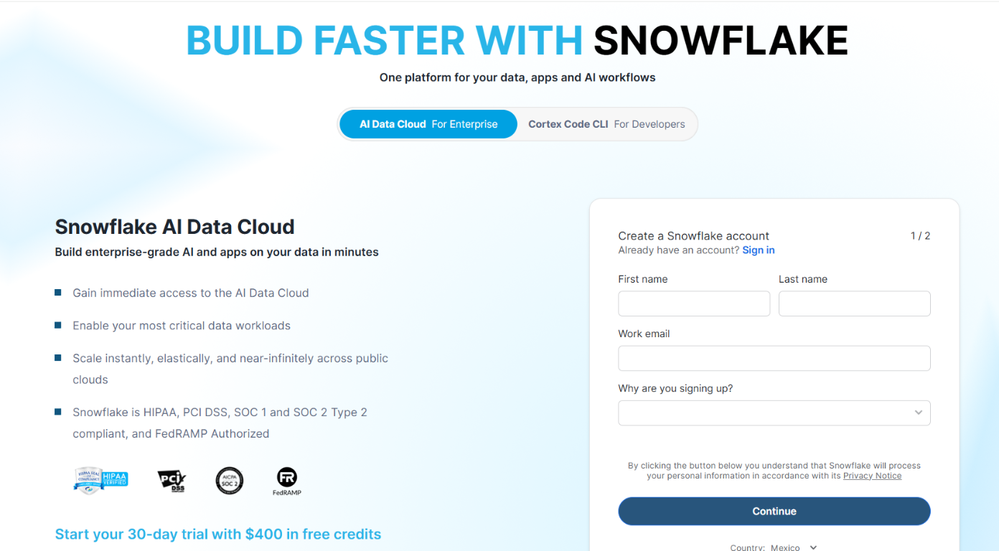
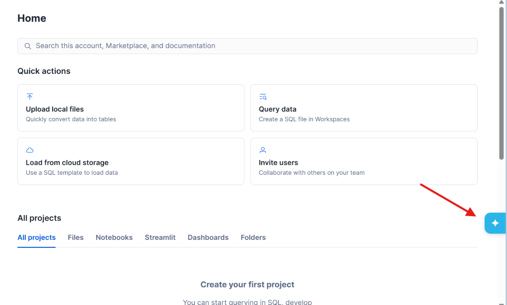
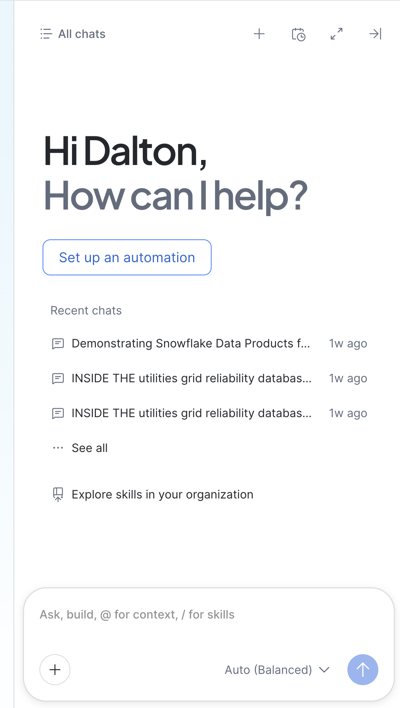
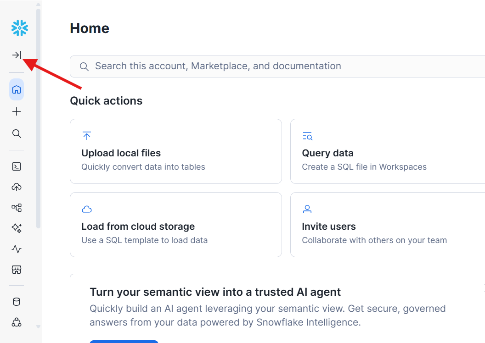
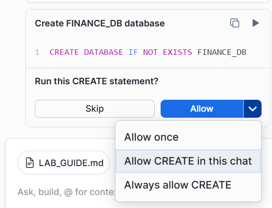
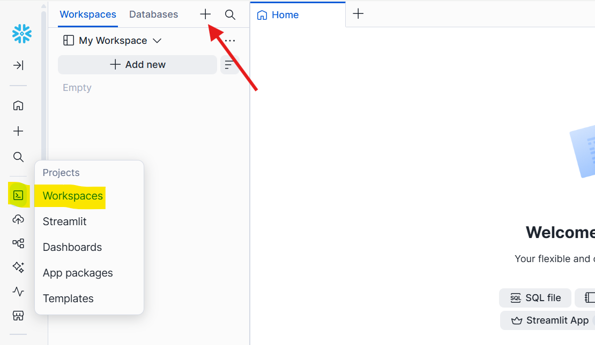
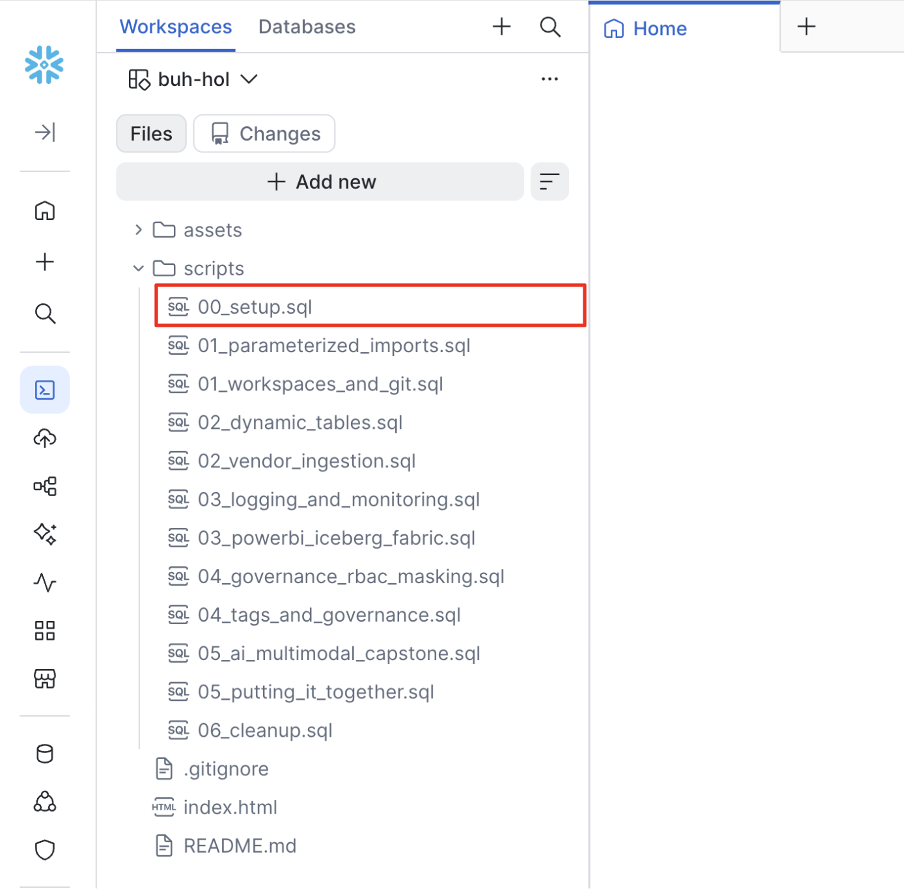
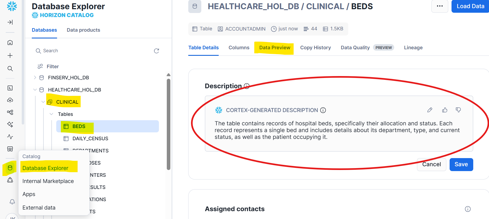
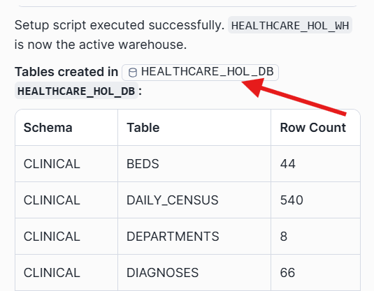

Git Workspaces, Dynamic Tables, Power BI / Iceberg, and Governance
Please use your laptop (not your phone) for signup and the entire lab.

In this step, you'll set up your development environment by opening Cortex Code — Snowflake's AI-powered coding assistant — and connecting it to a GitHub repository. This gives you a fully integrated workspace where you can browse files, write code, and collaborate with AI, all without leaving Snowflake.



Instead of downloading files, you'll connect Snowflake directly to the public GitHub repository. Copy and paste this prompt into Cortex Code:
Please connect my Snowflake account to a public GitHub repository so I can use it as a file source during this lab. 1. Create a database called BUH_HOL with schema INBOUND if it doesn't exist 2. Create an API integration called github_buh_lab for GitHub HTTPS access, allowing the prefix https://github.com/daltonryan6/ 3. Create a Git repository object called LAB_REPO in the BUH_HOL.INBOUND schema pointing to: https://github.com/daltonryan6/buh-hol 4. Fetch the latest contents from the repository 5. Confirm everything worked by listing the top-level files and folders available in the main branch

Now create a visual workspace to browse the repo files:
https://github.com/daltonryan6/buh-hol as the Repository URLgithub_buh_lab as the API Integration
Note: Do not modify the SQL script — in the next step, we'll ask Cortex Code to run it for us exactly as-is.

Instead of copy-pasting SQL, ask CoCo to execute the setup script directly from the GitHub repo:
Please execute the setup script from the GitHub repository we connected. Run this file to create the BUH_HOL database, warehouse, all tables, and load all sample data: @BUH_HOL.INBOUND.LAB_REPO/branches/main/scripts/00_setup.sql Use EXECUTE IMMEDIATE FROM to run it. After execution, show me a summary table of every table created in the INBOUND schema with its row count so I can confirm everything loaded correctly.
| Table | Rows |
|---|---|
| CLARITY_SER | 8 |
| HSP_ACCT_DX_LIST | 30 |
| ORDER_PROC | 28 |
| PAT_ENC | 25 |
| PATIENT | 15 |

After setup completes, you may see a pill for BUH_HOL that lets you jump directly to the database and explore it.

PAT_ENC_CSN_ID (encounter key), ENC_TYPE_C (numeric type codes like 1=Inpatient, 3=Emergency), RESULT_FLAG_C (0=Normal, 1=High, 2=Low). Dynamic tables will decode these into readable values.
In Step 0, you used CoCo to connect a Git repo and execute the setup script directly from it. Now let's explore what Git workspaces give you and run the remaining workspace exercises.
Go to your Git workspace in the left sidebar. You should see the repo files (scripts/, README.md, etc.) in the file explorer. Click into scripts/ to browse the SQL files.
Ask CoCo to run the workspace-specific exercises:
Please run the workspace and Git exercises from the lab repo: @BUH_HOL.INBOUND.LAB_REPO/branches/main/scripts/01_workspaces_and_git.sql Use EXECUTE IMMEDIATE FROM to run it. After execution, show me the results of the Git branch listing and file listing so I can confirm the workspace connection is working.
| Without Git workspaces | With Git workspaces |
|---|---|
| SQL in local files, Slack, shared drives | SQL versioned in Git with full history |
| No code review, no rollback | Pull requests and peer review |
| "Which version is in prod?" – unknown | Traceable: commit abc123 is in prod |
| Onboarding = copying files around | Clone and run |
You can browse the repo in Snowsight, see the scripts/ folder, and run SQL directly from Git via CoCo.
Dynamic tables flip ETL: you declare what the result should look like, and Snowflake handles when to refresh. No cron jobs, no orchestration, no manual MERGE scripts. This replaces what Snowforge does today.
Run Part B in the script. Five dynamic tables transform messy Clarity sources into a clean dimensional model:
CREATE OR REPLACE DYNAMIC TABLE BUH_HOL.CURATED.FACT_ENCOUNTER
TARGET_LAG = '1 minute'
WAREHOUSE = COMPUTE_WH
AS
SELECT
e.PAT_ENC_CSN_ID AS ENCOUNTER_ID,
e.PAT_ID,
CASE e.ENC_TYPE_C
WHEN 1 THEN 'Inpatient'
WHEN 2 THEN 'Outpatient'
WHEN 3 THEN 'Emergency'
WHEN 4 THEN 'Observation'
END AS ENCOUNTER_TYPE,
...
FROM BUH_HOL.INBOUND.PAT_ENC e
LEFT JOIN BUH_HOL.INBOUND.CLARITY_SER s
ON e.VISIT_PROV_ID = s.PROV_ID;
| Dynamic Table | Source | Key transformation |
|---|---|---|
| DIM_PATIENT | PATIENT | INITCAP names, format phones, compute age |
| DIM_PROVIDER | CLARITY_SER | Filter active, decode Y/N to boolean |
| FACT_ENCOUNTER | PAT_ENC + CLARITY_SER | Decode ENC_TYPE_C, compute LOS |
| FACT_DIAGNOSIS | HSP_ACCT_DX_LIST + PAT_ENC | Add IS_PRIMARY flag, join department |
| FACT_ORDER | ORDER_PROC + PAT_ENC | Decode RESULT_FLAG_C (Normal/High/Low) |
GOLD reads from CURATED (which reads INBOUND). The whole graph refreshes automatically:
| Gold Table | Purpose |
|---|---|
| DEPARTMENT_DASHBOARD | Encounter counts, avg LOS, charges by department |
| ED_THROUGHPUT | ED arrival-to-discharge hours, primary diagnosis |
| READMISSION_RISK | Patients with 2+ encounters within 30 days |
SELECT * FROM BUH_HOL.GOLD.DEPARTMENT_DASHBOARD ORDER BY TOTAL_CHARGES DESC; SELECT * FROM BUH_HOL.GOLD.ED_THROUGHPUT ORDER BY CONTACT_DATE; SELECT * FROM BUH_HOL.GOLD.READMISSION_RISK ORDER BY DAYS_BETWEEN;
A new patient arrives in the ED with a stroke. Insert the data (simulating what Snowlift/Snowloader would do) and watch it cascade through all layers:
-- Insert new patient, encounter, diagnosis, and lab order -- (Run Part E in the script) -- Wait ~1 minute, then verify: SELECT * FROM BUH_HOL.CURATED.DIM_PATIENT WHERE PAT_ID = 'P100016'; SELECT * FROM BUH_HOL.GOLD.ED_THROUGHPUT WHERE PAT_ID = 'P100016'; SELECT * FROM BUH_HOL.GOLD.DEPARTMENT_DASHBOARD WHERE DEPARTMENT_NAME = 'Emergency Department';
SELECT NAME, STATE, REFRESH_START_TIME,
DATEDIFF('second', REFRESH_START_TIME, REFRESH_END_TIME) AS SECONDS
FROM TABLE(INFORMATION_SCHEMA.DYNAMIC_TABLE_REFRESH_HISTORY())
ORDER BY REFRESH_START_TIME DESC LIMIT 15;
8 dynamic tables (5 CURATED + 3 GOLD). New patient P100016 (Jorge Medina) appears in all layers after refresh. Refresh history shows successful runs.
| Option | How it works | SF compute cost | Best for |
|---|---|---|---|
| DirectQuery | PBI sends SQL at query time | Warehouse runs during dashboard use | Operational dashboards |
| Import | PBI extracts data on a schedule | Warehouse runs only during refresh | Executive dashboards |
| Direct Lake (Fabric) | SF writes Iceberg to OneLake; PBI reads Parquet | Warehouse only writes Iceberg | Minimizing SF compute for BI |
Iceberg tables use the same SQL but store data in open Parquet format. Any Iceberg-compatible engine (Fabric, Spark, Trino) can read it.
SELECT * FROM BUH_HOL.GOLD.DEPT_DASHBOARD_ICEBERG ORDER BY TOTAL_CHARGES DESC;
| Layer | Recommended | Why |
|---|---|---|
| INBOUND | Snowflake default | Fast ingest, time travel, streams |
| CURATED | Snowflake default (DT) | Joins, transforms, incremental refresh |
| GOLD / Datamart | Iceberg (OneLake) | Open format, Direct Lake, no SF compute for BI |
| Snowflake Tags | Purview Labels | |
|---|---|---|
| Applied in | Snowflake | Microsoft |
| Drives | Masking & access | DLP & encryption |
| Auto-sync? | No – separate systems | |
| Purview scans SF? | Yes – tables, views, lineage | |
You understand the three PBI options, why Fabric CUs matter, how Iceberg works, and the recommended hybrid pattern.
| Object | Example tag |
|---|---|
| Warehouse | cost_center = 'Analytics' |
| Database | sensitivity = 'CONFIDENTIAL' |
| Table / View | contains_phi = 'Yes' |
| Column | pii_type = 'SSN' |
Tags cannot be applied to rows, stages, users, or roles.
Run Parts B and C. The script tags sensitive columns on INBOUND.PATIENT using Clarity column names:
ALTER TABLE BUH_HOL.INBOUND.PATIENT MODIFY COLUMN SSN SET TAG BUH_HOL.GOVERNANCE.PII_TYPE = 'SSN'; ALTER TABLE BUH_HOL.INBOUND.PATIENT MODIFY COLUMN PAT_MRN_ID SET TAG BUH_HOL.GOVERNANCE.PII_TYPE = 'MRN'; ALTER TABLE BUH_HOL.INBOUND.PATIENT MODIFY COLUMN EMAIL_ADDRESS SET TAG BUH_HOL.GOVERNANCE.PII_TYPE = 'EMAIL'; -- ... and PAT_FIRST_NAME, PAT_LAST_NAME, HOME_PHONE, ADD_LINE_1, BIRTH_DATE
The key pattern: attach a masking policy to a tag, not individual columns. Every column with that tag is automatically protected.
ALTER TAG BUH_HOL.GOVERNANCE.PII_TYPE SET MASKING POLICY BUH_HOL.GOVERNANCE.MASK_PII_STRING;
-- ADMIN sees everything EXECUTE USING POLICY_CONTEXT(CURRENT_ROLE => 'BUH_LAB_ADMIN') SELECT PAT_FIRST_NAME, PAT_LAST_NAME, SSN, EMAIL_ADDRESS, BIRTH_DATE FROM BUH_HOL.INBOUND.PATIENT LIMIT 3; -- CLINICIAN sees names/email, SSN last-4, DOB visible EXECUTE USING POLICY_CONTEXT(CURRENT_ROLE => 'BUH_LAB_CLINICIAN') SELECT PAT_FIRST_NAME, PAT_LAST_NAME, SSN, EMAIL_ADDRESS, BIRTH_DATE FROM BUH_HOL.INBOUND.PATIENT LIMIT 3; -- ANALYST sees ***MASKED*** for all PII EXECUTE USING POLICY_CONTEXT(CURRENT_ROLE => 'BUH_LAB_ANALYST') SELECT PAT_FIRST_NAME, PAT_LAST_NAME, SSN, EMAIL_ADDRESS, BIRTH_DATE FROM BUH_HOL.INBOUND.PATIENT LIMIT 3;
| Role | First Name | SSN | DOB | |
|---|---|---|---|---|
| ADMIN | maria | 111-22-3333 | msantos@example.com | 1965-03-14 |
| CLINICIAN | maria | ***-**-3333 | msantos@example.com | 1965-03-14 |
| ANALYST | ***MASKED*** | ***-**-**** | ***MASKED*** | NULL |
Tags applied to Clarity source columns. Tag-based masking protects all PII at once. ADMIN sees full data, CLINICIAN sees partial, ANALYST sees masked.
[Epic Clarity SQL Server]
|
| Snowlift / Snowloader (simulated by 00_setup.sql)
v
INBOUND (Clarity tables: PATIENT, PAT_ENC, CLARITY_SER, ORDER_PROC, HSP_ACCT_DX_LIST)
|
| Dynamic Tables auto-refresh
v
CURATED (DIM_PATIENT, DIM_PROVIDER, FACT_ENCOUNTER, FACT_DIAGNOSIS, FACT_ORDER)
|
| Dynamic Tables auto-refresh
v
GOLD (DEPARTMENT_DASHBOARD, ED_THROUGHPUT, READMISSION_RISK)
|
+--> Snowflake tables (analytics, AI, sharing)
+--> Iceberg tables in OneLake (Power BI Direct Lake)
GOVERNANCE layer (tags + masking policies) applies across ALL layers
Git Workspace provides versioned SQL delivery
SELECT 'INBOUND.PATIENT' AS LAYER, COUNT(*) AS ROWS FROM BUH_HOL.INBOUND.PATIENT UNION ALL SELECT 'INBOUND.PAT_ENC', COUNT(*) FROM BUH_HOL.INBOUND.PAT_ENC UNION ALL SELECT 'CURATED.DIM_PATIENT', COUNT(*) FROM BUH_HOL.CURATED.DIM_PATIENT UNION ALL SELECT 'CURATED.FACT_ENCOUNTER', COUNT(*) FROM BUH_HOL.CURATED.FACT_ENCOUNTER UNION ALL SELECT 'GOLD.DEPARTMENT_DASHBOARD', COUNT(*) FROM BUH_HOL.GOLD.DEPARTMENT_DASHBOARD UNION ALL SELECT 'GOLD.ED_THROUGHPUT', COUNT(*) FROM BUH_HOL.GOLD.ED_THROUGHPUT UNION ALL SELECT 'GOLD.READMISSION_RISK', COUNT(*) FROM BUH_HOL.GOLD.READMISSION_RISK ORDER BY LAYER;
| Topic | Key takeaway |
|---|---|
| Git Workspaces | Connect repo, browse files, run SQL directly – replaces file-share chaos |
| Dynamic Tables | Declare the result; Snowflake handles schedule and incremental refresh |
| Power BI / Iceberg | Write GOLD as Iceberg to OneLake; PBI reads via Direct Lake, no SF compute |
| Fabric Cost | All workloads share CUs; size capacity for BI reads, keep pipeline in Snowflake |
| Tags & Masking | Tag PII columns; attach masking to the tag – one policy protects everything |
| Purview | Scans Snowflake directly; tags and labels are separate systems |
USE ROLE ACCOUNTADMIN; ALTER WAREHOUSE COMPUTE_WH UNSET TAG BUH_HOL.GOVERNANCE.COST_CENTER; DROP DATABASE IF EXISTS BUH_HOL; DROP ROLE IF EXISTS BUH_LAB_ADMIN; DROP ROLE IF EXISTS BUH_LAB_ANALYST; DROP ROLE IF EXISTS BUH_LAB_CLINICIAN; DROP API INTEGRATION IF EXISTS github_buh_lab;